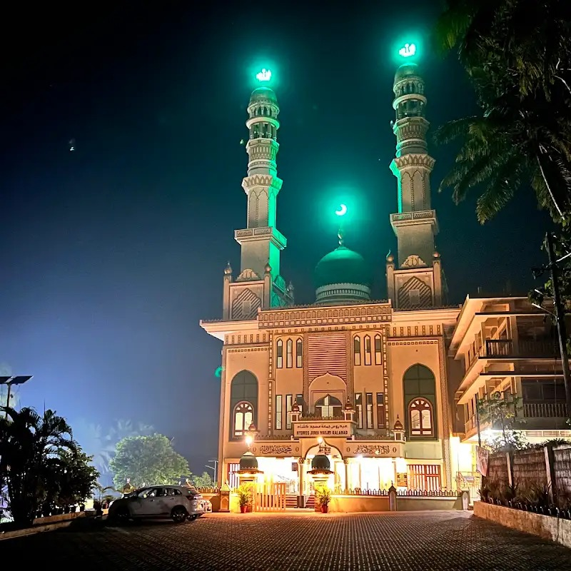

Real Story · 中文
这是我从 Kerala 往 Agra 赶路的第一晚。
21/11/2023，我开始从 Vatakara / Kerala 一带往 Agra 方向赶路， 因为我要赶上 Taj Mahal 的 full moon viewing。
那一路本来应该只是 rush。 只是开车、找地方停、休息、第二天继续开。 可是在 Kasaragod，一个临时停靠变成了我很难忘的一晚。
我把 Toyotaki 停在一座 mosque 附近。 那座 mosque 在夜里亮着绿色的灯，两座 minaret 立在黑暗中， 很安静，也很美。
我一直都对不同信仰的美保持开放。 可能也因为我小学时曾经有过一次 consciousness out from body 的体验， 所以后来我对这些看不见、解释不了、但又真实影响人的东西，不会太快拒绝。
那一晚，当地的大人和小孩很快注意到我。 他们很好奇，一个 Malaysia woman 怎么会一个人开着 campervan， 从 India 一路要去 Europe。
我们的语言不完全相通，只能用简单英文、笑容、手势慢慢沟通。 但是有些连接，不需要很复杂的语言。 你看得出他们是真心欢迎你，也看得出他们是真的想帮忙。
晚一点，孩子们还和他们的父亲一起回来。 他们告诉我，他们家就在附近，如果我需要什么，可以找他们。 他们还提到家里有人跟 Singapore 有关系。 那种感觉很温暖，好像他们想用自己知道的一切，来让我这个陌生旅人安心。
更让我感动的是 mosque 的 PIC 也表达了帮助和支持。 那不是很正式的大场面，只是一句关心、一个态度， 但对一个正在赶路的 solo traveller 来说，已经很够了。
那一晚，Kasaragod 没有成为地图上的一个普通停靠点。 它变成了一盏绿色的灯。 在我往 Agra 赶路的第一晚，提醒我：陌生的地方，也可能有很温柔的人。
English Memory Summary
A simple stop became a night of warmth.
On 21/11/2023, Tuzi left the Kerala / Vatakara area and began the rush toward Agra for the Taj Mahal full moon viewing.
During this journey, she made an unexpected stop near a mosque in Kasaragod. The mosque glowed beautifully at night with green lights, and what could have been a simple parking stop became a memory of human warmth.
Local adults and children greeted her with curiosity and kindness. They communicated through smiles, gestures, and simple English, asking about her solo campervan journey from India toward Europe.
Later that night, some children returned with their father, told her their home was nearby, and offered help if she needed anything. They also mentioned family ties to Singapore, as if trying to build a small bridge of familiarity.
The mosque PIC also expressed support and willingness to help. For Tuzi, this night in Kasaragod became a reminder that kindness can appear in unexpected places, even in the middle of a rushed and uncertain journey.
Heart Statement
我愿意向不同形式的美打开。
我不是去那里寻找什么。 我只是赶路，累了，停下来。
可是那一晚，mosque 的绿色灯光、孩子们的笑容、父亲的关心、 还有 PIC 的一句愿意帮忙，让一个普通停靠点变成了记忆。
我来自 Malaysia，也见过很多不同文化和信仰一起生活。 所以当我在路上遇见另一种 sacred beauty，我不会急着把它推开。
有时候，世界不是用大道理打开的。 它是用一盏灯、一个笑容、一个陌生人的 “You can call us if you need help” 慢慢打开的。
Sometimes the world opens not through big answers, but through a light, a smile, and the kindness of people you just met.